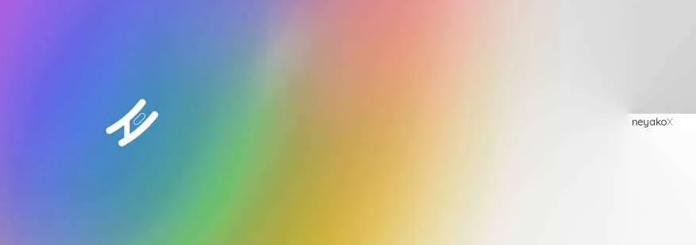
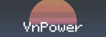

Tools that I personally recommend:
privacy.sexy
: Bunch of scripts for disabling telemetry in Windows/Macos/Linux.
Gnirehtet
: Reverse network tethering for Android.
Lawnicons
: Improved AOSP icons pack.
winutil
: An ultility to install and debloat with tweaks, troubleshoot with config for your Windows device.
ani-cli
: Cli client to browse and watch anime.
Nerd font cheat-sheet
: Search tool using for finding icons and symbols for Linux rice.
Minecraft-crafting
: Website that contains all Minecraft crafting recipes.
Lucida
: A music ripper with an emphasis of ease of access, and accessibility as a whole.
Discord server that I recommend:
Neyako's Playground
: Public server about techs and gears.
TechJank
: Private server specialize in advanced level of tech and coding.
Some people that I've met on the Internet:
Neyako
p3nguin
VnPower
My webring button, use this if you want to add me to your website:

